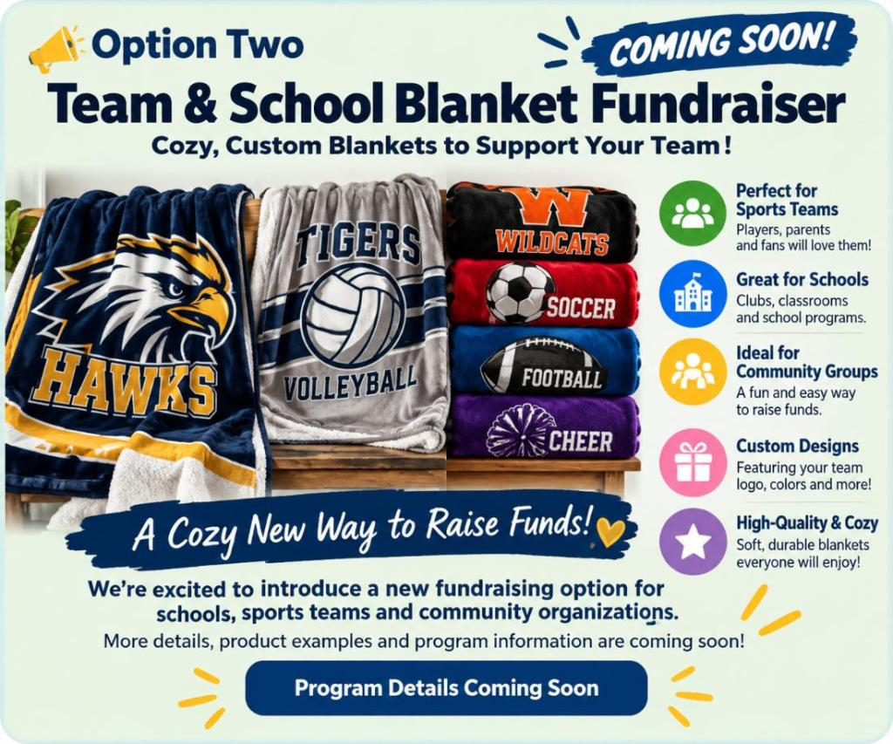

01 / For the team
Team spirit,
turned into support.
Sports Team Fundraiser
For youth and amateur sports teams. Families upload an athlete photo, choose personalized artwork and products, and the team receives 35% of sales.
- No upfront costs
- As simple as sharing a link
- Personalized sports artwork and products
- Team earns 35% of sales
- Support from me every step of the way
Iconic Sports handles processing, production, shipping, and customer service.
Explore Iconic Sports ↗ (opens in new tab)No obligation. Review the official program information before deciding whether to participate.

35%
of sales goes
back to your team
“Example of my son. I uploaded two photos and then customized my artwork and created a framed poster for his room.”— Tara